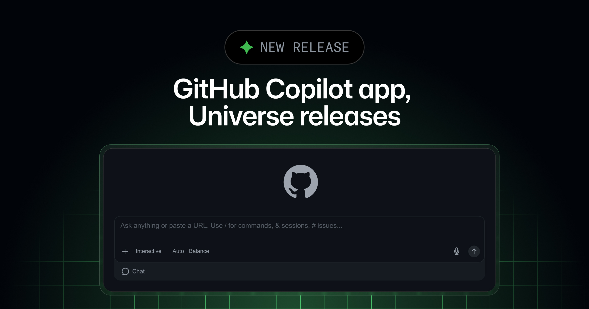
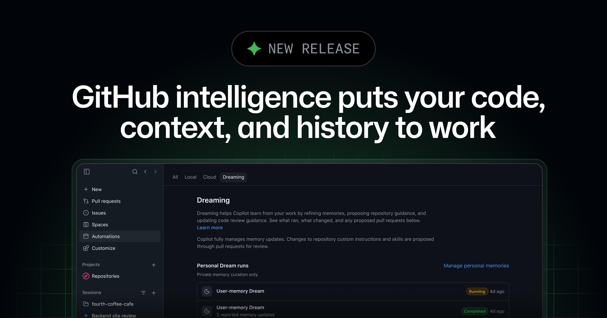
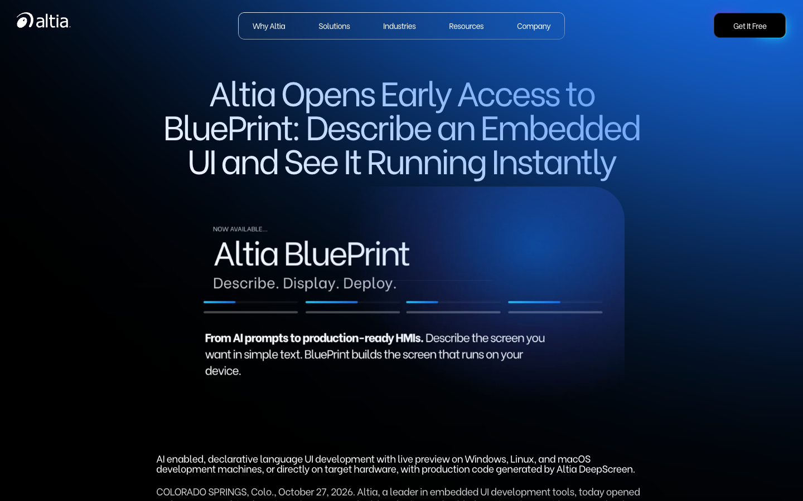
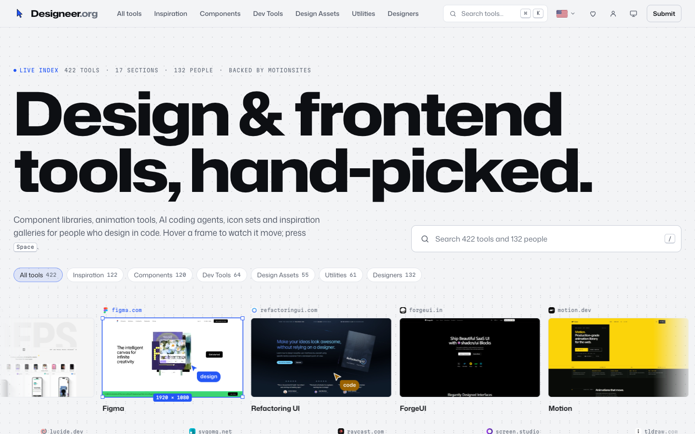
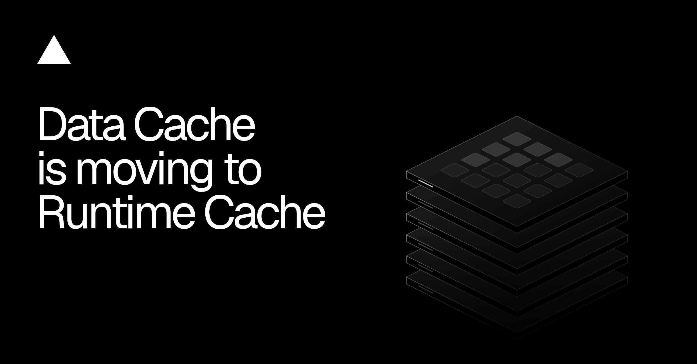
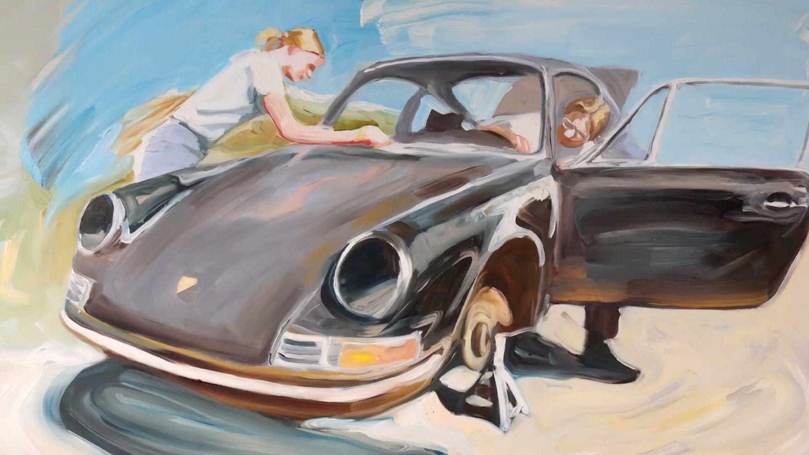

GitHub 把 Projects、Memory、Dreaming 和 computer use 一口气塞进 Copilot；Vercel 一边重算缓存容量与价格，一边给常驻进程补健康检查；Altia 则把嵌入式 UI 改写成一份 AI 能读、硬件能跑的描述。表面是几拨更新，底下都在补同一件事：一段自动化工作得有上下文，得活着，出问题还得能收回来。
这比继续秀一次性生成更重要。团队现在该问的不是“AI 能不能做”，而是它记住了什么、花了多少钱、在哪块硬件上跑，以及坏了以后谁负责重启。

Copilot Projects 进入 public preview。一个项目可以同时吃仓库、设计稿、Slack 线程和会议笔记，再按任务拉起多个 agent，最后把 PR 等结果交回来；重复工作还能设成 project automation。GitHub 顺手把 Figma、Slack、图片生成和桌面 computer use 也接进来了。
这里最该盯的不是“能点鼠标”，而是它终于承认工作很少只活在一个 repo 里。computer use 仍需逐次批准，组织管理员可以关掉，macOS 还要 Accessibility 与 Screen Recording 权限——这几行小字比演示视频重要。还没实测桌面控制，先别全员打开；先挑一条跨 Figma、浏览器和仓库的真实流程，看批准次数会不会把效率吃回去。

Copilot Memory 已在付费套餐 GA，个人偏好与仓库约定可以跨 App、CLI、VS Code、云端 agent、Slack 和 Teams 继续用。Dreaming 还在 opt-in preview：它会回看过去的工作，增删 memory，并把 skills 或 instructions 的改动做成 PR；每次 dream run 都会消耗 AI credits。
这套名字有点玄，权限逻辑倒是清楚：私人的记忆可以直接整理，写进仓库的规则必须过 PR。好用与否先不吹，至少它给“agent 越用越懂团队”加了一道可审查的门。真要开，第一周只看三件事：它记错了什么、谁能删、为了整理记忆花了多少 credits。

BluePrint 开始 early access。它把嵌入式界面写成可读描述，AI 负责改这份描述，Viewer 立即在 Windows、Linux、macOS 或目标硬件上显示结果，生产代码最后交给 Altia DeepScreen 生成。
这条路比“AI 帮车机画个概念图”踏实得多：描述、预览、目标硬件和生产代码没有被剪成四段演示。嵌入式 UI 最贵的是每次改动后的上机确认，BluePrint 真能省下多少，要看复杂状态和硬件差异，不看首屏生成速度。还没拿到 early access，先记住它的交付链，不替实际稳定性下结论。

Designeer 收了 422 个工具、17 个分类和 132 位 design engineer。每张卡不是一枚 logo，悬停后会播放官网短录屏；预览只在 hover 或选中时加载，搜索还能用 ⌘ K 或 / 直接唤起。
设计工具索引最常见的毛病，是看完一百个名字仍不知道它们长什么样。这个站把“先看两秒再决定要不要点开”做成了核心功能，筛选成本一下就下来了。数量不算夸张，信息密度反而刚好；可以直接拿来补团队的设计工程雷达。

Vercel 的 Data Cache 退出 beta，迁进 Runtime Cache，Next.js 的 fetch cache 与 unstable_cache 不用改代码。Pro 每个项目、每个环境拿到原 team pool 的 8 倍空间，Enterprise 是 10 倍；代价也写得很明白：原本不计费的读写会开始按 Runtime Cache 收钱，起步价是每百万 read units 0.40 美元、每百万 write units 4 美元，地区不同还会变。
这不是一次无痛改名。新团队从 10 月 30 日默认启用，老 Hobby 团队 11 月 29 日迁移，Pro 等通知；提前 opt in 会立刻进入新价格。先去 Observability 看真实读写，再决定要不要让 Vercel Agent 优化，别被“8 倍容量”催着按下迁移。
Vercel Daemons 现在能配 HTTP liveness probe。平台会定期请求健康端点，失败就重启 container，专门收拾那种“进程还在，事情早就不干了”的假活状态。
常驻 agent、队列 worker、转码进程都需要这一层。process running 从来不等于 product working；健康端点至少要能回答依赖是否可用、队列是否推进、最近一次成功工作是什么时候，别只返回一个永远 200 的自我安慰。
Safari 27.2 给 Customizable Select 补了 ::field-content，可以单独控制选中项在按钮里的文字样式；大的 picker 会用 safe alignment 留在视口内。Grid Lanes 的 flow-tolerance 也正式改名为 fit-tolerance，旧名字暂时还能用，但已经是 deprecated alias。
fit-tolerance 默认 1em，调高后能让连续项目更愿意落在相邻列，键盘 Tab 时焦点不必为了几像素高度差在页面两边跳。这类更新没有发布会气质，却正好提醒前端：视觉排布和可访问性不是两张检查表，它们会在同一个 CSS 数值里撞上。

视频：Vimeo 原片https://vimeo.com/1241253326｜来源：Stash 文章https://www.stashmedia.tv/em-cooper-tonic-dna-paint-a-true-romance-for-porsche/
片子讲的是 Jeff 和 Molly Stockwell 一起修复一辆 1966 Porsche 912，再从洛杉矶开到旧金山结婚的真事。Em Cooper 没把它拍成一条工整的复古汽车广告，而是在同一张油画表面上不停覆盖、刮掉、重画：公路变成人脸，车身被下一笔吞掉，前一个记忆没有消失干净，又被后一个记忆压在下面。
它最妙的地方，是转场不负责“带我们去下一镜”，而是直接模拟记忆怎么变形。做产品片也能借这招：别把每个状态切成孤岛，先找一个能被持续改写的共同材质、轮廓或光源，再让功能变化发生在同一块表面上。下一次做四个产品状态的 storyboard，可以先禁用硬切，只用覆盖、擦除和形变把它们串起来，看看叙事会不会更像一件完整的东西。
1241253326。核验说明：GitHub、Vercel、WebKit、Altia、Designeer 与 Stash 官方页面于 2026-10-31 回读。正文嵌图原始宽度为 1440–2400px，并逐张目视检查。Porsche 的 Vimeo player URL 预检返回 401，飞书按规则使用 1920px Stash 制作视觉降级，同时保留 Stash 与 Vimeo 原片链接。